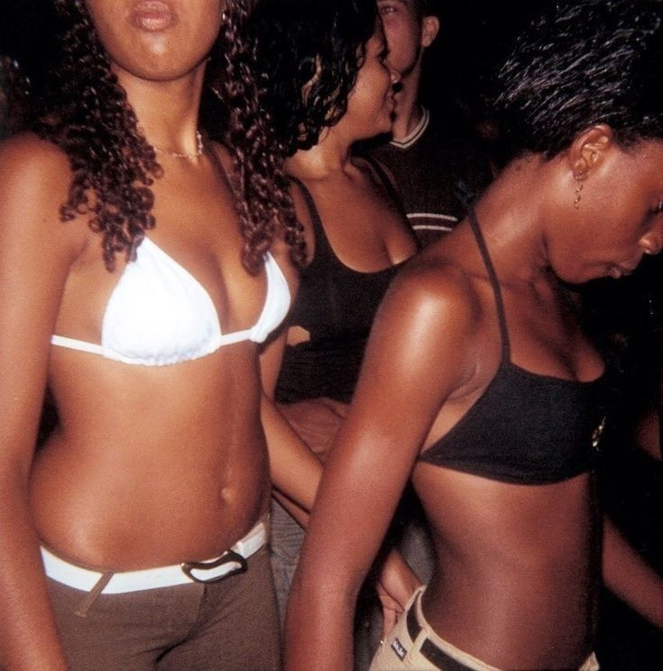

O Baile Funk carioca surgiu nas comunidades do Rio de Janeiro nos anos de 1980. Nesse período, surgiram os famosos bailes black, realizados em clubes e salões comunitários. Um dos mais conhecidos foi o Baile da Pesada, promovido pelo DJ Big Boy e Ademir Lemos, que tocavam músicas de soul e funk internacional. Esses bailes logo se popularizaram entre os jovens das periferias cariocas, criando um espaço de identidade e resistência cultural. O cenário começou a mudar com a chegada do Miami Bass, um subgênero eletrônico vindo dos Estados Unidos, com batidas mais rápidas e dançantes. Os DJs brasileiros adaptaram esse estilo ao gosto local, dando origem ao que ficou conhecido como o funk carioca. A partir daí, o gênero passou a incorporar letras em português, abordando temas do cotidiano das favelas, como desigualdade, festas, relações e violência. Mesmo com críticas e preconceito ao longo do tempo, o funk cresceu e se transformou em um dos movimentos culturais mais fortes e influentes do Brasil. Hoje, ele é reconhecido como uma expressão autêntica das periferias urbanas, com diversos subgêneros e artistas alcançando sucesso nacional e internacional.
